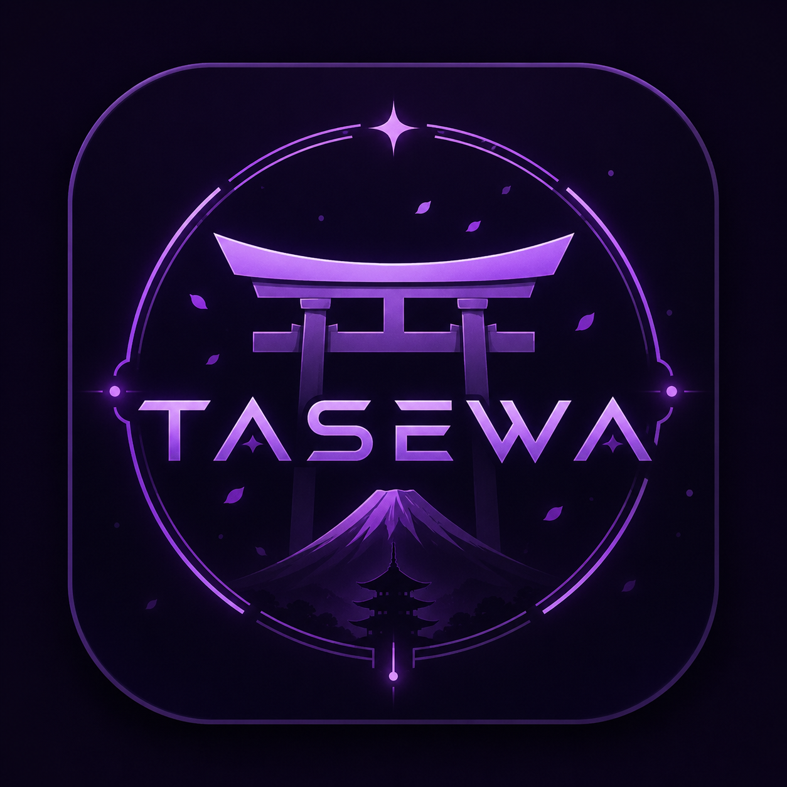
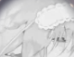
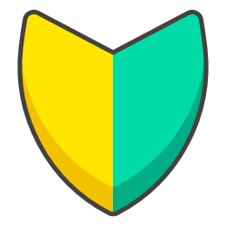

Official Home
Explains what TASEWAKAI is, who runs it, and where people can join safely.
TASEWAKAI 会
風 loading...



TASEWAKAI 会Japanese Learning • Community • Culture Join Discord
Join Discord
日本語 × Gaming × Culture × Community
An international Discord community for Japanese learning, gaming, cultural exchange, creative projects, and real community moments.
Update: live Discord member meter added.
Community spotlight
The official chaos spark of TASEWAKAI. Certified community mood booster.
Beta testers
Hidden-area membership pass
About the server
TASEWAKAI is a community project founded by Kazu. It was created for people who want to learn Japanese through real social interaction, not only through textbooks.
The server combines Japanese learning, gaming, culture, content creation, events, and international friendships. It feels like a community hub rather than a strict classroom.
About this website
Explains what TASEWAKAI is, who runs it, and where people can join safely.
Visitors can quickly see who to contact and what they can do on the site.
Learning tools now reward local YEN, EXP, streaks, and level progress.

Kana, JLPT words, and kanji trainers help new learners start practicing.

Petals, fireworks, shrine visuals, and smooth motion create a Japanese mood.

The website is being built like a real project with versions, patches, and playful experiments.
People behind the project
Founder & Community Director
Kazu is the founder of TASEWAKAI and the main person behind the server direction, systems, growth, identity, content, and collaborations.
Kazu's SteamProject Helper & Japanese Support
Satoshi is calm, friendly, reliable, enjoys gaming, has strong Japanese ability, and supports the server with ideas and cultural knowledge.
Staff Member & Content Collaborator
Arthur is encouraging, positive, and kind. He supports staff work, joins content collaboration, and brings friendly energy.
Moderator & Creative Helper
den is a serious and dependable moderator with experience in Steam Workshop modding and graphic design.

Fresh Moderator & Japan Culture Helper
bunn1munch is a new American moderator with a warm interest in Japan, Japanese culture, and community support. She helps keep TASEWAKAI friendly, welcoming, and easy for new learners to enjoy.
Fresh support energyOfficial links
ソーシャル & メディア
ようこそ、旅人。
Join the community, meet people, practice Japanese, and become part of the road to 1000 members.
Join TASEWAKAI
Website guide
Start with the community story, train Japanese, earn local YEN and EXP, then use your progress in the snack store and leaderboard.
Update: clearer first-visitor guide added.
YEN store
Buy Japanese collectibles with the YEN earned from Kana, JLPT, and Daily Phrases. Prices move slowly with the local market.
Update: rarity market economy added.
Owned collectibles
Market history
Trusted access crew
Satoshi and Arthur are part of the early trusted crew helping shape TASEWAKAI before wider release. This pass represents people who test features, report problems, give feedback, and help keep the project moving with care.
Satoshi supports early access checks, learning-flow feedback, Japanese support notes, and calm review of new trainer features before they are shown publicly.

Arthur helps review community-facing updates, member experience, content presentation, and the overall feeling of the TASEWAKAI learning world.
Learning tool
Practice kana and earn local YEN + EXP. One name can be used, and it can only be changed once per week.
Kana Trainer
Choose the correct reading.
Pick an answer to begin.
Need help?
If something happens in the Discord server and you are not sure who to contact, use this list.
Discord: kazu.kaiDiscord: satoshi______Discord: arturio8949Discord: miku_fravery. Open Discord